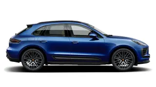
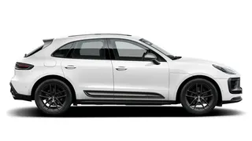
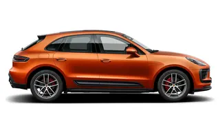
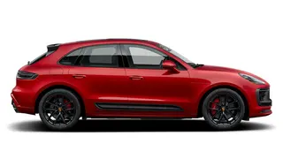

|
Macan Model |
|
U Macan modele spadaju:
| Macan |
Macan T |
|  |
 |
| Macan S |
Macan GTS |
|  |
 |
Model Macan je prvi put predstavljen 2014. godine i postao je popularan zbog spoja sportskih performansi, udobnosti i luksuza.
Macan je dostupan u različitim verzijama, uključujući modele sa različitim motorima i performansama.
Porsche Macan je omiljen među ljubiteljima performansi i luksuza koji traže kompaktni SUV sa sportskim karakterom. Ovaj model je postao ključni deo Porscheove ponude vozila, doprinoseći rastu popularnosti ovog nemačkog brenda širom sveta.